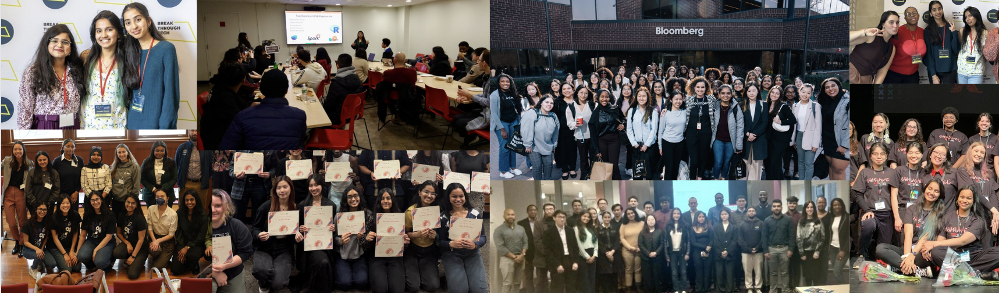

About Me
Hi there! I am currently a student at Macaulay Honors College, at City College of New York with a keen interest in exploring the field of Artificial Intelligence and Data Science. I am majoring in Computer Science, with a minor in Management and Business Administration. From organizing the TEDxCUNY conference to leading the Society of Women Engineers, I thrive on connecting ideas and people. Currently fulfilling the roles of being a full-time student, a fellow at BASTA, Headstarter Al, a participant at G-SWEP, and so much more! Let me introduce to you to how I can contribute to the ever-evolving world of technology!
Notable Experiences
In the past, I have the opportunity to be involved with several different internships, and communities, which have led to my professional growth and new skillset. My past experiences have contrinbuted greatly to building my present, and it is important for them to be mentioned here!
Data Fellow at Bloomberg
During March 2024, I had the incredible opportunity to visit the Bloomberg's Data HQ at Princeton. At the 2 day event, I met multiple professionals who've paved there way into understanding, and contributing to our current understanding of the data. I was able to meet some amazing fellow students who are equally delved into the field of data, and we together worked on a hackathon, and completed Best of Bloomberg projects. Currently, I am involved with the fellowship as I continue to pursue certifications from Bloomberg Education, and receive mentorship from an amazing employee, situated at the data headquarters!
Data Science Intern at JP Morgan Chase & Co.
The Data Science internship was my first time working at a corporate setting, meeting managers, and collaborating with a team for building mutliple credit card fraud detection model. The experience not only introduced to me to new technologies, and machine learning models, but also enhanced my leadership and communication skills through teamwork, meetings, and learning together. The internship allowed me to better understand data, and contribute to this world of technology.
AI Fellow at Breakthrough Tech AI @Cornell Tech
The year long fellowship introduced me to the world of Machine Learning! I had the opportunity to meet the most talented students from around the city, and learn from them. We formed teams, and had discussion for future of data, and worked together on a Kaggle competition hosted by the New York Botanical Garden. Moreover, I was able to get insights from several AI leaders of today, including Judith Spitz, and Allie Miller. Their contributions are evident to how long we've come, and the journey yet to complete in this evolving technology!
Fellow at Accenture, CCNY Career Catalyst Program
The fellowship delved deeper into the world of consulting, and introduced to the work culture, expectations, and the lifestyle of consultants at Accenture. I was paired with an amazing mentor who shared their personal experience working with the company, and was so helpful while I navigated this new realm of technology.
Coursework at Grove School of Engineering, City College of New York
It is significant for me to mention the various courses I continue to pursue for my degree. Although I often focus on Data Science, and Machine Learning Roles, my current education continues to strengthen my Data Structures and Algorithmic skills, preparing me for a role in Software Engineering as well. Whether it is Python, Java, C++, or any other coding language, the amazing professors and staff have helped me acquire all skils needed!
Machine Learning Engineer Extern at Samsung Innovation Center
As a college freshmen, this externship was the resource I needed to dive deeper into the field of technology. I was able to start learning the different fields within Artificial Intelligence, and know more about the contributions yet to be made. The externship allowed me to build model-marketting tools through Clustering, and other unsupervised learning models. At the end of the externship, my team was one of the three selcted to present our project to the leaders at Samsung.
Computer Science Mentor at Girls Who Code, CCNY Chapter
As a student, I always appreciate the guidance I recieve from my friends, family, and mentors. This mentorship opportunity was just one, where I was able to give back to the young, curious high school students. College, STEM degree, internships, and the idea of professional development can be intimidating, however, through these mentorship sessions, I aim to support young females into the field of Computer Science, and motivate them for thier future endevaors.
BrainSTEM Innovations Sales Channel Strategy Extern
The BrainSTEM Externship was different from my past experiences, but certainly a rewarding one. This externship helped incredibly to understand the market, and contributing the sales channel strategies for PURA Olea Olive Oil, through influencers, marketplaces, and personal websites.